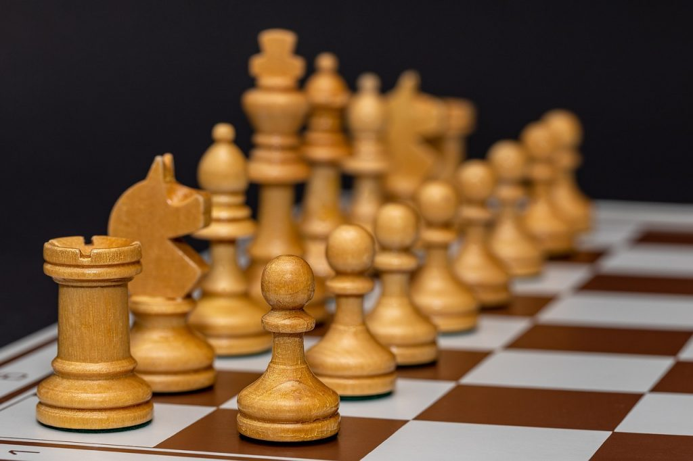
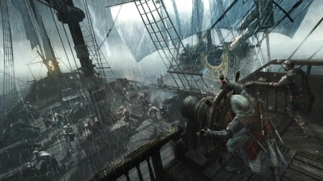
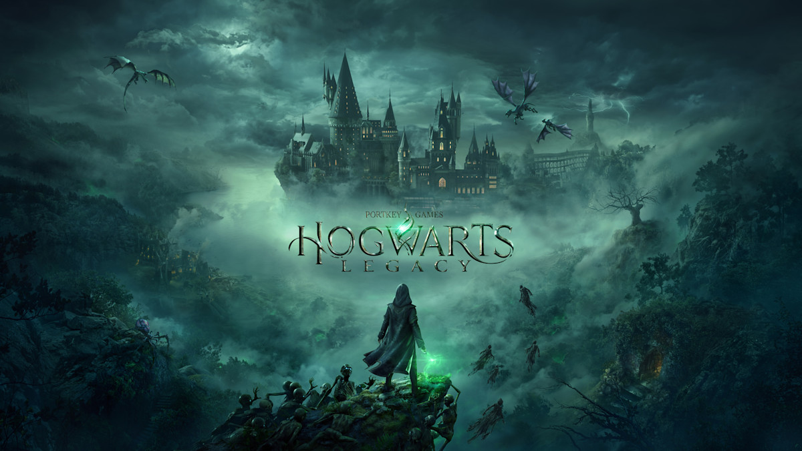
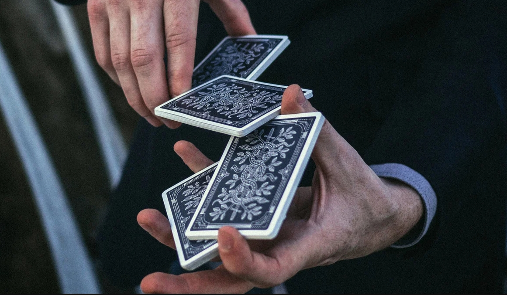
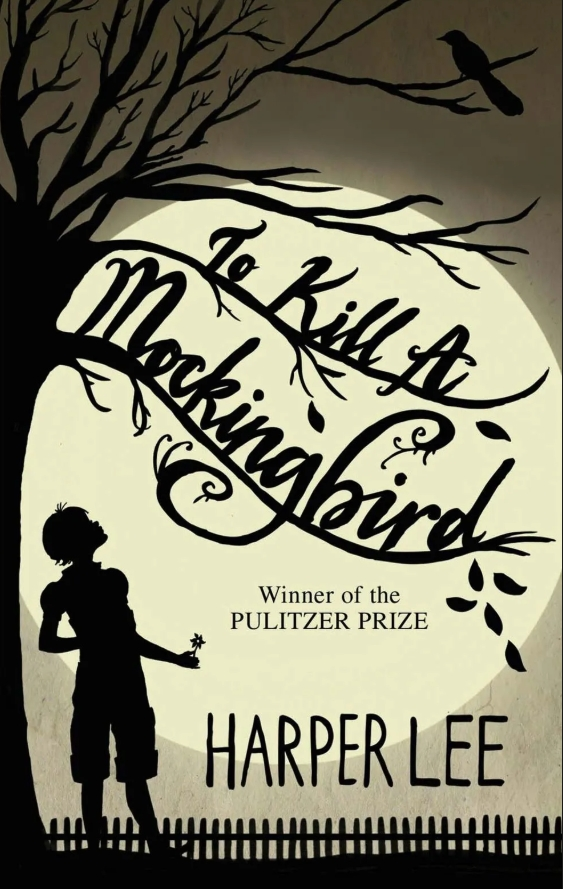
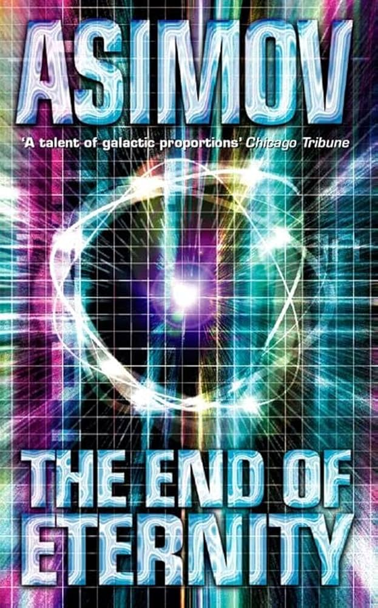

Playing Guitar
I love playing both Acoustic and Electic guitar along with keyboard and occasionally a drum set. Though I am not a professional, I can strum almost any chord on both types of guitars
Playing Chess
I havve been playing chess casually for about two years now. I mostly play online but i do love to play over the board games with others. My elo in both rapid(10 to 25 mins games) and blitz (3 to 5 mins games) has supressed the 900 benchmark. Do challenge me on my chess.com profile by clicking the image above. I always appreciate a challenge !
Playing Video Games
From Role Playing RPG games like Mass Effect trilogy to Vast Open world Story based games like
Assasin's Creed franchise, I am into almost every AAA games as long as they provide satisfying graphics
a vast fantasy world whether it's set in past or future. Some of my favorite games would be
- Assasin's Creed Blackflag

- Cyber Punk 2077

- Hogwarts Legacy

Card Magic
Did you know although there are only 52 cards in a standard deck, the number of their shuffle order is astronomically large being 52! which is around 8.0658x10^67. Whether it's about sleight of hand or simply some math tricks, I can't get enough of the beloved reactions I get showing people what little magic I have mastered
Reading

From short poems to long novels, I am always down for a good read. My favorite genre would be adventure, fantasy, scifi or all of them. Pages capture me like spells cast by an old wizard with ancient wizdom. Three of my favorite books are
- To kill a Mockingbird

- End of Eternity

- The perks of being a wallflower